The [Gulf Restoration Network] works to protect wetlands from reckless development,
destructive logging practices, and harmful U.S. Army Corps of Engineers projects and policies.
More specifically
You apply for a permit build on the wetlands in the United States.
The Army Corps of Engineers can approve permits that meet certain criteria.
I have no idea how the Army got this job.
The Army, understandably, doesn't scrutinize permits as much as the Gulf Restoration Network would like.
Identify applications for inappropriate things (like shopping malls).
Contact
In the past, Scott has had to do this manually. But he doesn't really have time for that.
We're using a computer program to make the first two of these steps easier.
New Orleans Wetlands
My script extracts this information.
Analog data-cleaning
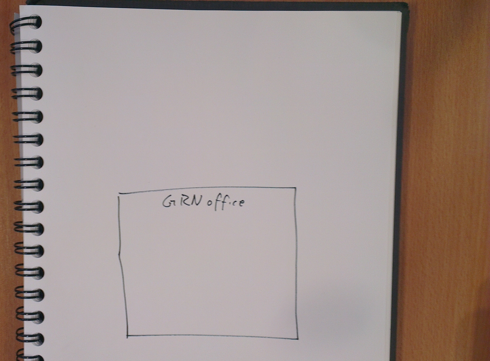
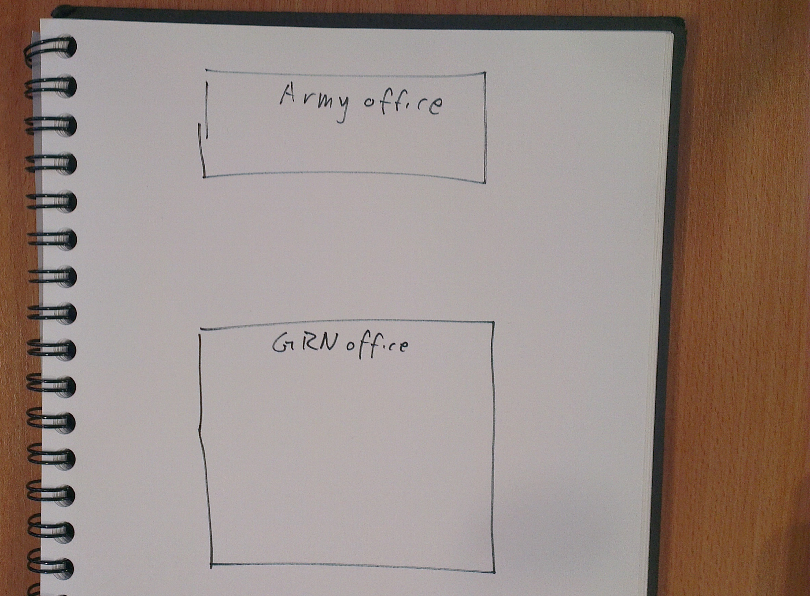
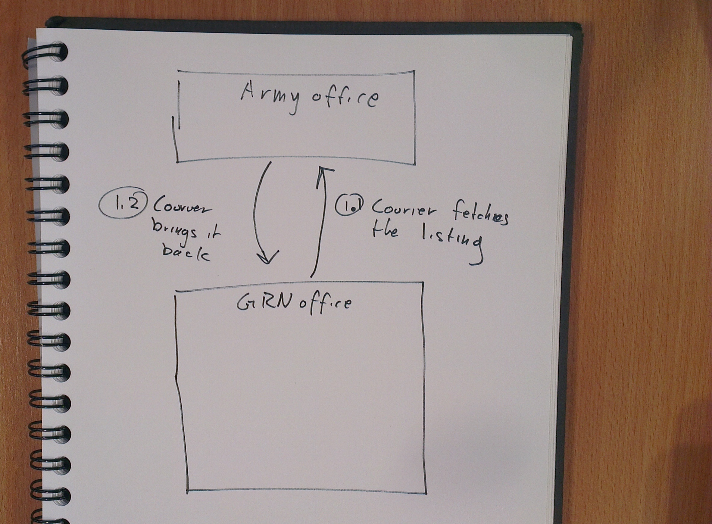
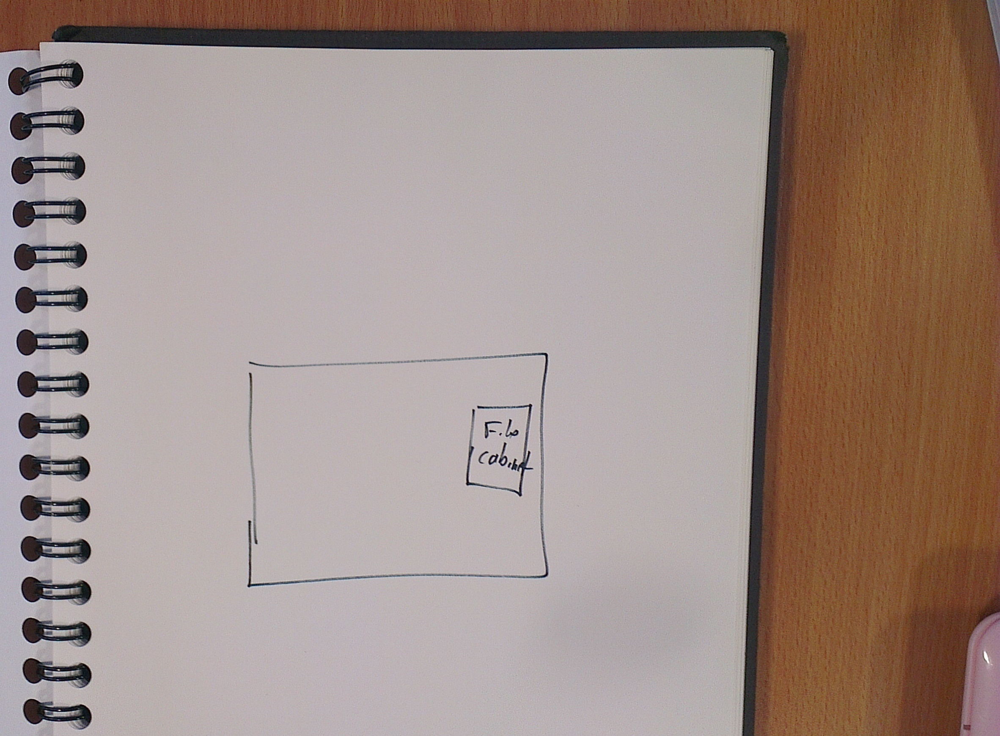
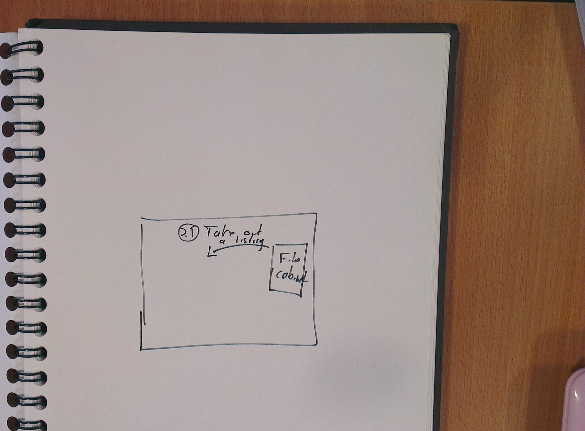
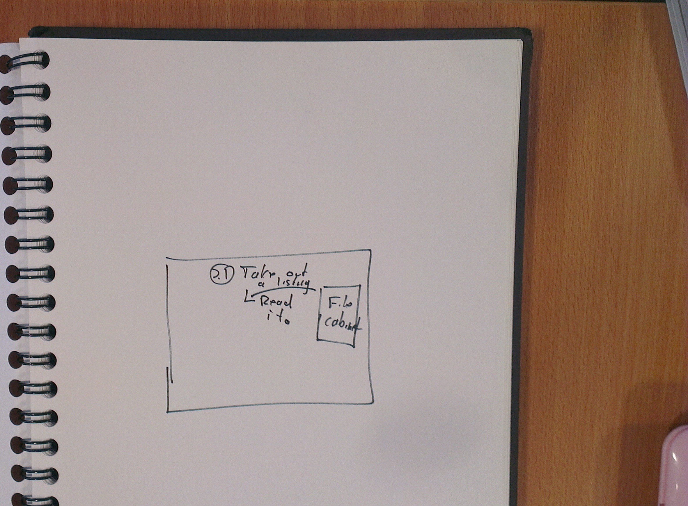
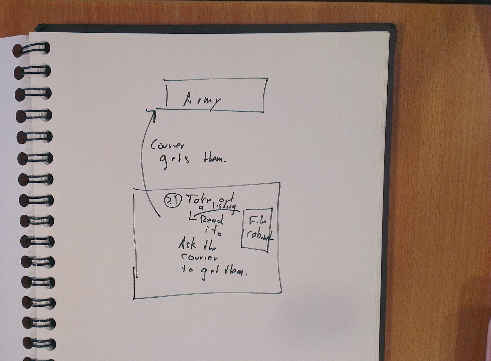
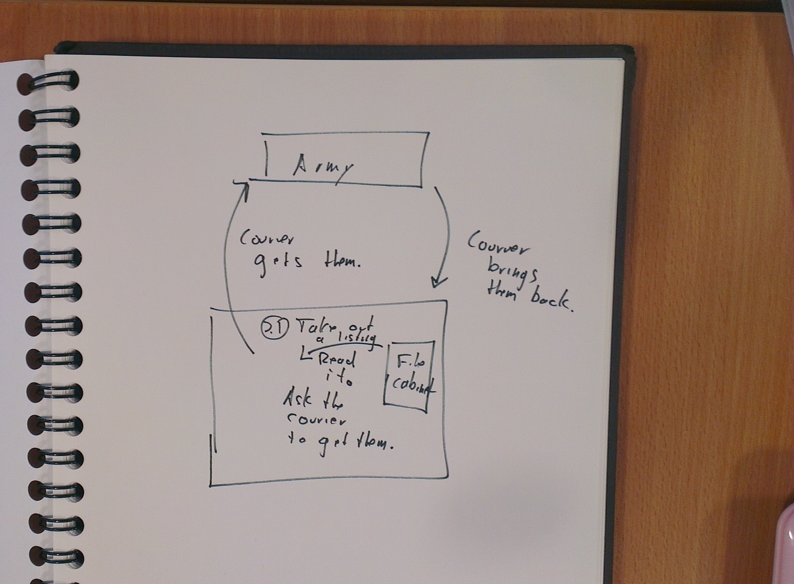
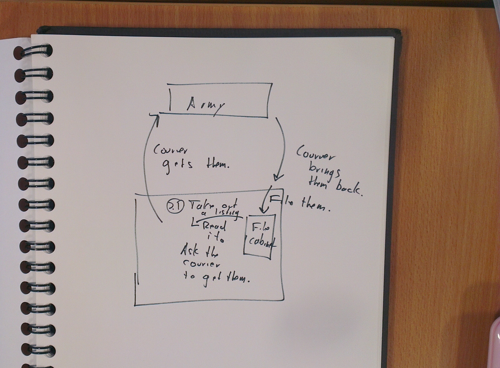
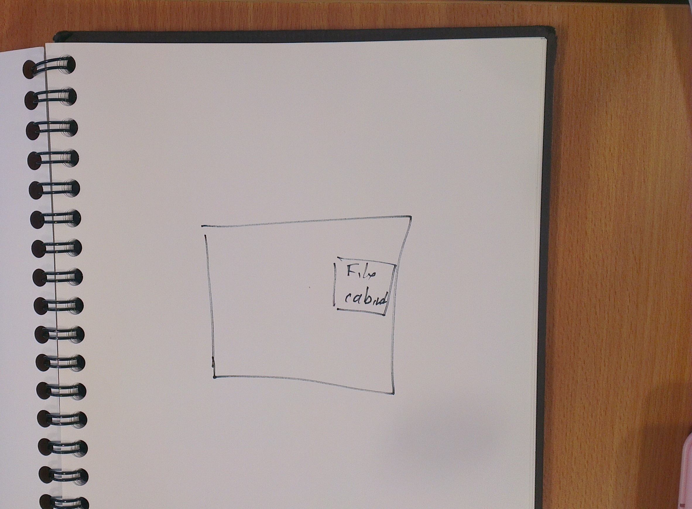
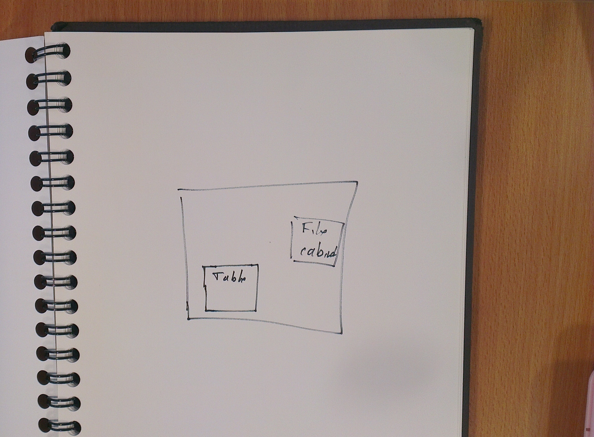
Digital data-cleaning
Dividing labor
Complex jobs become simple and easy when we divide them like this.
Write parts at a time.
Some parts analog, some parts digital
Multiple teams/people can work in parallel.
Abrupt transition
Tricks for cleaning data with computers
XML/HTML
Use an XML/HTML parser
R: XML
Python: lxml, BeautifulSoup
C#: XmlDocument, XmlReader
VBA: XmlDocument, XmlReader
Java: Java API for XML Processing (JAXP)
php: SimpleXML, XML Parser, simple_html_dom
Ruby: Nokogiri
Or not
# UK Phone number
/(\+44[0-9 -]{10,15})/
# United States postal code
/([0-9]{5})-?([0-9]{4})?/
# URL
/(https?:\/\/[^ "]+)[ "]/
# ISBN
/([0-9X-]{10,13})/
XPath or CSS?
CSS for HTML, normally.
Faster
More people know it.
CSS is normally shorter.
XPath for more power. For example, select divs that contain tables.
//div[table[@class="bacon"]]
XPath for non-HTML
Python tricks
Quick search
Removing spaces and make lowercase before searching messy text
'brains' in ''.join(messy_ocr_text.split()).lower()
# Given a directory with a bunch of CSV files with identical schemas.
head -n1 1.csv > combined.csv
for csv in *.csv
do
sed 1d $csv >> combined.csv
done
# List bad pages here
MALFORMED_PAGES = {
('FooBar-August 05, 2012 1234567890.pdf', 67),
('FooBar-September 02, 2012 1234567890.pdf', 34),
}
# ...
# Somewhere else in the code
if (filename, int(page.attrib['number'])) in MALFORMED_PAGES:
warnings.warn("I'm skipping page %d because it is marked as malformed." % int(page.attrib['number']), UserWarning)
else:
do(something)
blah.blah('blah')
Telling a story
You don't need to know what you're doing.
Wetlands output
Does the public notice contain the phrase "Section 404"?
# This is Python code
'section404' in rawtext.replace(' ', '').lower()